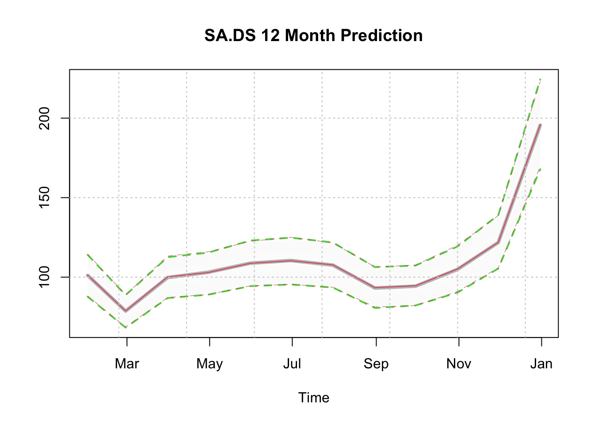

Chapter 3 tsmethods package
3.1 Introduction
The tsmethods package provides a set of common methods for use in other packages in our framework. Additionally, it also exports plot methods for objects of class tsmodel.predict, which is the output class from all calls to the predict method, as well as for objects of class tsmodel.distribution, which is a subclass within tsmodel.predict providing the simulated or MCMC based forecast distribution.1 Finally, the package also includes the methods for ensembling distributions. Table 3.1 below provides the currently exported methods for each of the packages which have been released. We have tried to work with existing S3 methods in the stats package where possible including: summary, coef, logLik, AIC, fitted, residuals, predict and simulate. However, we have also created custom methods such as estimate (for model estimation from a specification object), tsdecompose (for time series decomposition of structural time series type models), tsfilter for online filtering,2 tsbacktest (for automatic backtesting) as well as a number of other methods documented in their individual packages.
| methods | tsets | tsissm | tsvets | tsforeign |
|---|---|---|---|---|
| estimate | ✓ | ✓ | ✓ | ✓ |
| summary | ✓ | ✓ | ✓ | ✓ |
| coef | ✓ | ✓ | ✓ | |
| logLik | ✓ | ✓ | ✓ | |
| AIC | ✓ | ✓ | ✓ | |
| fitted | ✓ | ✓ | ✓ | ✓ |
| residuals | ✓ | ✓ | ✓ | ✓ |
| plot | ✓ | ✓ | ✓ | ✓ |
| tsmetrics | ✓ | ✓ | ✓ | ✓ |
| tsspec | ✓ | ✓ | ✓ | |
| tsdiagnose | ✓ | ✓ | ✓ | |
| tsdecompose | ✓ | ✓ | ✓ | ✓ |
| tsfilter | ✓ | ✓ | ✓ | |
| tsprofile | ✓ | ✓ | ||
| predict | ✓ | ✓ | ✓ | ✓ |
| tsbacktest | ✓ | ✓ | ✓ | ✓ |
| simulate | ✓ | ✓ | ✓ | |
| tsbenchmark | ✓ | ✓ | ✓ | |
| tsreport | ✓ | |||
| tscor | ✓ | |||
| tscov | ✓ | |||
| tsaggregate | ✓ | |||
| tsconvert | ✓ | |||
| tsequation |
3.2 Ensembling Forecast Distributions
Ensembling in the tsmodels framework proceeds as follows:
- (Separate) models are estimated for either the same series or a set of different series.
- The residuals of the estimated series are collected and the residual correlation is calculated. For very large-dimensional systems (where \(N\) > \(T\)) it is possible instead to use a factor model to extract the correlations, but we leave this for a separate discussion.
- The estimated correlations are then used to generate correlated samples on the unit hypercube (using for instance a copula).
- These samples are then passed to the
innovargument in thepredictmethod of each model, at which time they are transformed to normal random variables with variance equal to the estimated model variance.3 A key reason for using uniform variates and transforming them back into normal variates within the predict method is the possible presence of the Box Cox transformation, which requires that the variance be on the transformed scale rather than the final series scale. It was therefore decided that this approach was more general and less prone to user error.4 - The predictive distribution, which is generated by simulation, will then be infused with the cross-sectional correlation of the residuals passed to the predict method. Note: This approach works well for models with a single source of error such as ARIMA and ETS, but NOT for multiple source of error models such as BSTS.
- The predictive distributions are then passed to the
ensemble_modelspecfunction for validation, followed by calling thetsensemblemethod on the resulting object with a vector of user specified weights.
The next section provides a demonstration of this approach.
3.3 Demonstration
Step 1: Estimation
suppressMessages(library(tsmethods))
suppressWarnings(suppressMessages(library(tsets)))
suppressMessages(library(xts))
suppressMessages(library(copula))
suppressWarnings(suppressMessages(library(viridis)))
data(austretail, package = "tsdatasets")
y1 <- austretail[,"SA.DS"]
y2 <- austretail[,"ACF.DS"]
spec1 <- ets_modelspec(y1, model = "MMM", frequency = 12)
spec2 <- ets_modelspec(y2, model = "MMM", frequency = 12)
mod1 <- estimate(spec1)
mod2 <- estimate(spec2)Step 2: Residual Correlation and Copula Construction/Sampling
C <- cor(residuals(mod1), residuals(mod2))
cop <- normalCopula(as.numeric(C), dim = 2, dispstr = "un")
set.seed(100)
U <- rCopula(5000 * 12, cop)
cor(U)## [,1] [,2]
## [1,] 1.0000000 0.5958815
## [2,] 0.5958815 1.0000000Step 3: Prediction
p1.joint <- predict(mod1, h = 12, nsim = 5000, innov = U[,1])
p2.joint <- predict(mod2, h = 12, nsim = 5000, innov = U[,2])
p1.indep <- predict(mod1, h = 12, nsim = 5000)
p2.indep <- predict(mod2, h = 12, nsim = 5000)
par(mfrow = c(2,2), mar = c(3,3,3,3))
plot(p1.joint, main = "Correlated Predictions[y1]", n_original = 52)
plot(p2.joint, main = "Correlated Predictions[y2]", n_original = 52)
plot(p1.indep, main = "Independent Predictions[y1]", n_original = 52)
plot(p2.indep, main = "Independent Predictions[y2]", n_original = 52)We can also plot the distributions directly, since there is a plot method for both tsmodel.predict and tsmodel.distribution, and we can also overlay one on top of another by using the add = TRUE argument.
plot(p1.joint$distribution, gradient_color = "whitesmoke", median_col = "grey",
median_width = 4, interval_color = 3, interval_quantiles = c(0.01, 0.99),
main = "SA.DS 12 Month Prediction")
plot(p1.indep$distribution, add = TRUE, median_col = 2, median_width = 1,
gradient_color = "whitesmoke", interval_color = 2,
interval_quantiles = c(0.01, 0.99), interval_width = 0.5)
Evaluation of Predictive Distributions on Forecast Growth Rates
p1.growth.joint <- tsgrowth(p1.joint, d = 1, type = 'diff')
p2.growth.joint <- tsgrowth(p2.joint, d = 1, type = 'diff')
p1.growth.indep <- tsgrowth(p1.indep, d = 1, type = 'diff')
p2.growth.indep <- tsgrowth(p2.indep, d = 1, type = 'diff')
D.joint <- cor(p1.growth.joint$distribution, p2.growth.joint$distribution)
D.indep <- cor(p1.growth.indep$distribution, p2.growth.indep$distribution)
print(round(data.frame(Correlated = diag(D.joint),
Independent = diag(D.indep)), 3))## Correlated Independent
## 2019-01-31 0.608 -0.021
## 2019-02-28 0.608 -0.005
## 2019-03-31 0.605 0.018
## 2019-04-30 0.614 0.013
## 2019-05-31 0.606 0.004
## 2019-06-30 0.610 0.002
## 2019-07-31 0.613 0.004
## 2019-08-31 0.617 0.002
## 2019-09-30 0.632 0.000
## 2019-10-31 0.616 -0.003
## 2019-11-30 0.620 -0.009
## 2019-12-31 0.610 -0.017par(mfrow = c(2,1), mar = c(3,3,3,3))
image(as.matrix(D.joint), col = rev(grey(seq(0, 1, length = 25))),
zlim = c(0, 1), main = "Correlated")
contour(cor(p1.joint$distribution, p2.joint$distribution), add = TRUE,
drawlabels = TRUE)
image(D.indep, col = rev(grey(seq(0, 1, length = 25))), zlim = c(0, 1),
main = "Independent")
contour(D.indep, add = TRUE, drawlabels = TRUE)Step 4: Forecast Ensembling
par(mfrow = c(1,1), mar = c(3,3,3,3))
spec.joint <- ensemble_modelspec(p1.joint, p2.joint)
ensemble.joint <- tsensemble(spec.joint, weights = c(0.5, 0.5))
plot(ensemble.joint, main = "Ensemble Weighted Forecast", n_original = 52)The current choice of using base R plotting may change in the future to use either ggplot2 or plotly.↩︎
Unlike some, we have avoided using
stats::filteras this is a function rather than a method.↩︎The samples can be transformed to any other distribution using the quantile method of the distribution.↩︎
Additionally the marginal distributions of the individual series may not all be the same, so this approach provides some greater degree of flexibility.↩︎